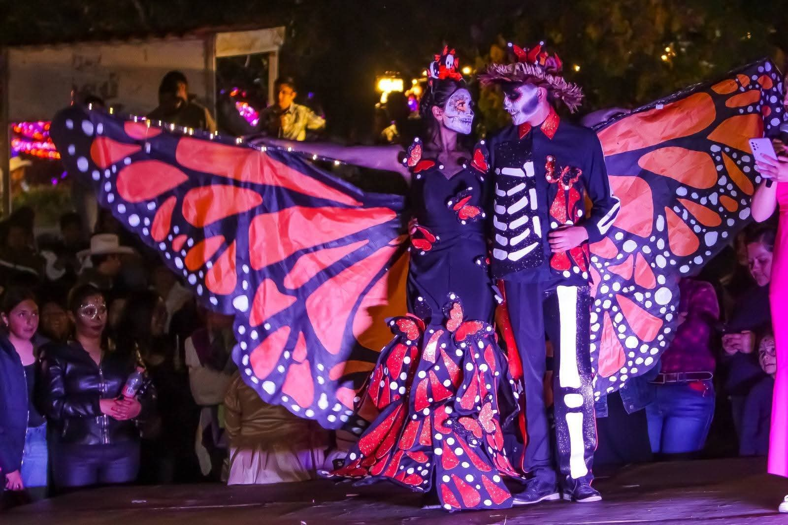
Evento
10 Jul 2026
eventos Culturales 2026
Nuestros estudiantes participan en eventos culturales en el Municipio de Aculco.
Una institución comprometida con la excelencia educativa y la formación integral de jóvenes del municipio de Aculco
Años formando técnicos
El Colegio de Estudios Científicos y Tecnológicos del Estado de México, Plantel Aculco, es una institución educativa pública de nivel medio superior que ofrece formación bivalente: bachillerato tecnológico combinado con una carrera técnica especializada.
Ubicado en el municipio de Aculco de Espinoza, en el Estado de México, nuestro plantel se ha consolidado como una opción educativa de calidad para los jóvenes de la región noroccidente del estado, brindando herramientas académicas y técnicas que les permiten insertarse en el mercado laboral o continuar estudios superiores.
Con la educación de calidad
Tecnología al servicio del aprendizaje
Valores éticos y humanos
Pertenencia e identidad institucional
Impartir educación media superior de calidad, en su modalidad de bachillerato tecnológico bivalente, con el objeto de que los egresados cuenten con educación tecnológica terminal que les permita incorporarse a una actividad productiva, o bien, continuar sus estudios de nivel superior.
Ser la mejor opción en educación media superior en su modalidad de bachillerato tecnológico bivalente en el Sistema Nacional de los CECyTE’s, así como en el Estado de México.
Formación bivalente que combina bachillerato general con una carrera técnica especializada
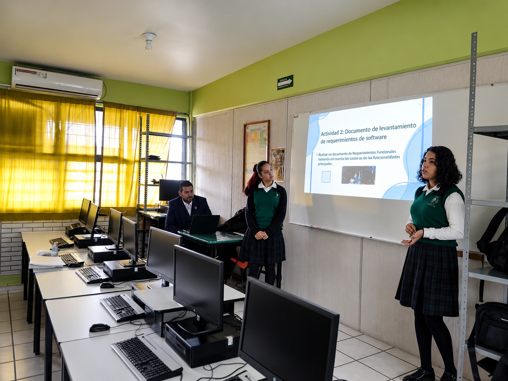
Forma profesionales capaces de analizar, diseñar, desarrollar, instalar y mantener sistemas de software que respondan a las necesidades del usuario y del sector productivo, utilizando lenguajes de programación modernos y metodologías de desarrollo actuales.
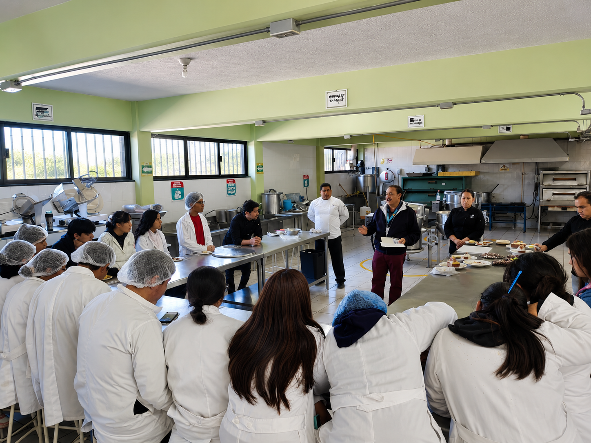
Forma profesionales capaces de procesar, conservar y transformar materias primas alimentarias (frutas, verduras, cereales, carnes, lácteos y sus derivados) aplicando procesos industriales, controles de calidad y buenas prácticas de manufactura para garantizar la inocuidad alimentaria.
| Aspecto | Técnico en Programación | Técnico en Producción Industrial de Alimentos |
|---|---|---|
| Enfoque | Desarrollo de software y sistemas | Procesamiento industrial de alimentos |
| Área | Tecnologías de la información | Ciencias agroalimentarias |
| Duración | 3 años (junto con bachillerato) | 3 años (junto con bachillerato) |
| Prácticas | Salas de cómputo y proyectos | Laboratorio de alimentos |
| Salida principal | Programador / Desarrollador | Técnico en alimentos |
Espacios diseñados para ofrecer una experiencia educativa integral y de calidad
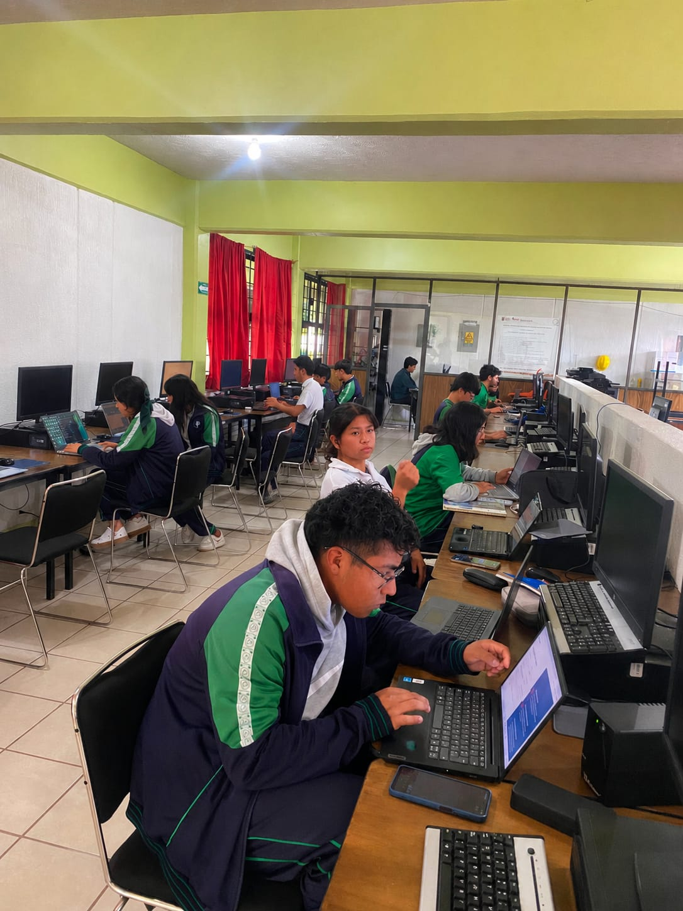
Contamos con dos salas de cómputo equipadas con equipo de última generación para las prácticas de la carrera de Programación y apoyo académico general.
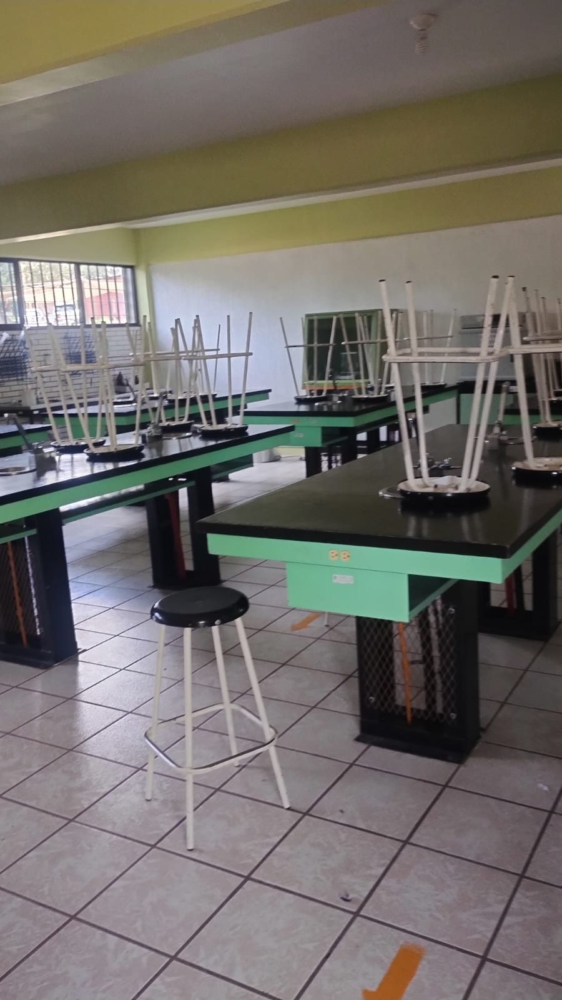
Espacio equipado para prácticas de química, física y biología, donde los estudiantes aplican los conocimientos teóricos de manera experimental.
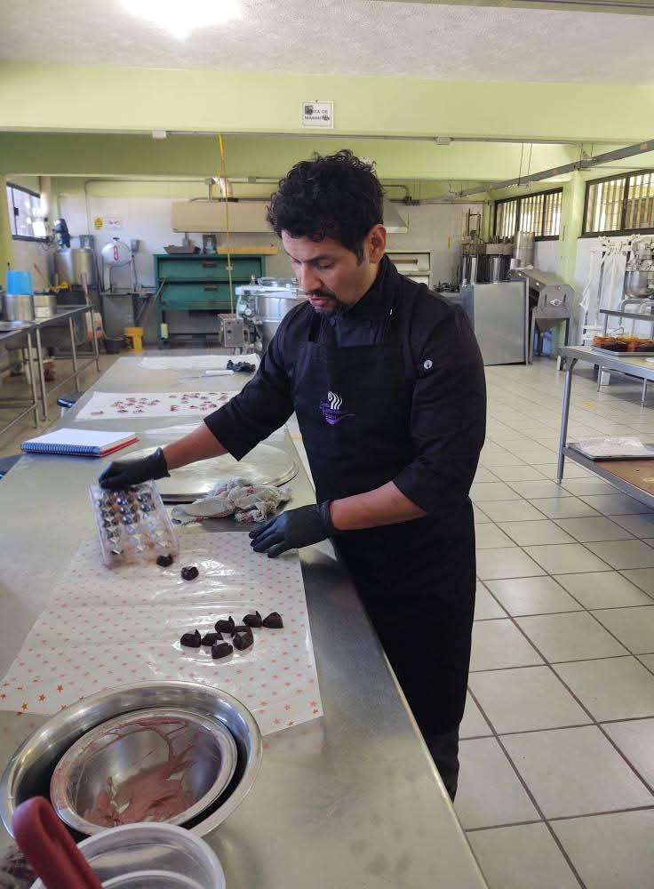
Laboratorio especializado en Producción Industrial de Alimentos, con equipo para procesamiento, conservación y control de calidad.
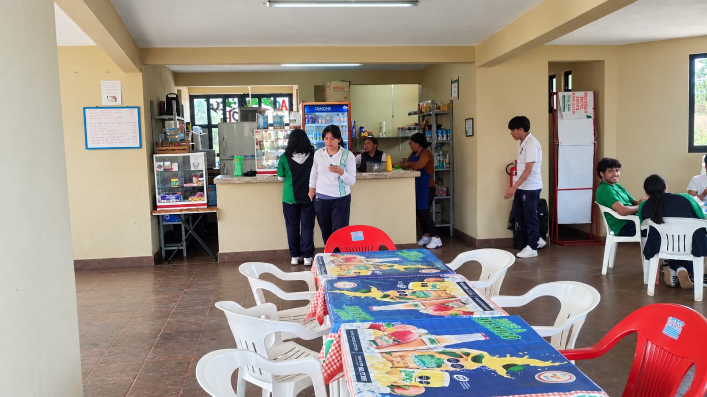
Área de convivio con servicio de alimentos y bebidas, donde los estudiantes pueden descansar y socializar en un ambiente agradable.
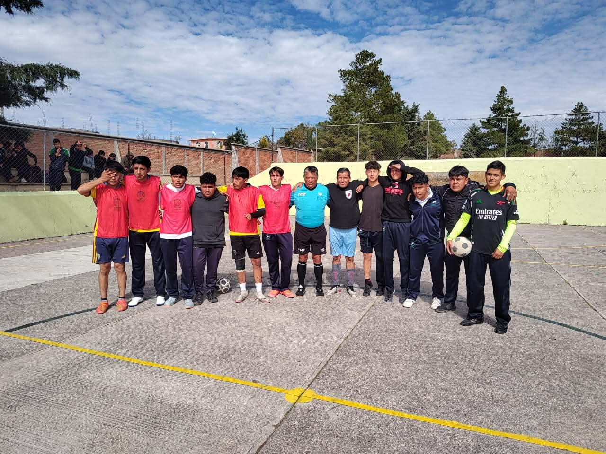
Cancha de fútbol rápido y cancha de básquetbol para la práctica deportiva y torneos internos e interplantelares.
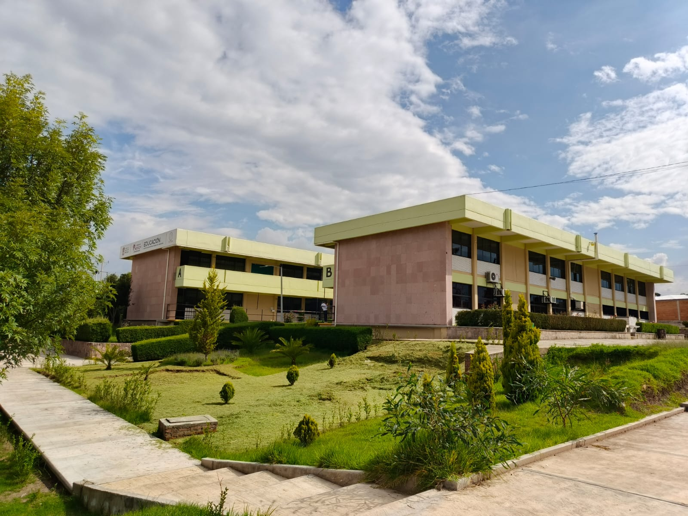
Amplios espacios verdes que fomentan la convivencia, la reflexión y el contacto con la naturaleza dentro del plantel.
Empresas e instituciones con las que mantenemos vínculos para prácticas profesionales, servicio social y fortalecimiento académico
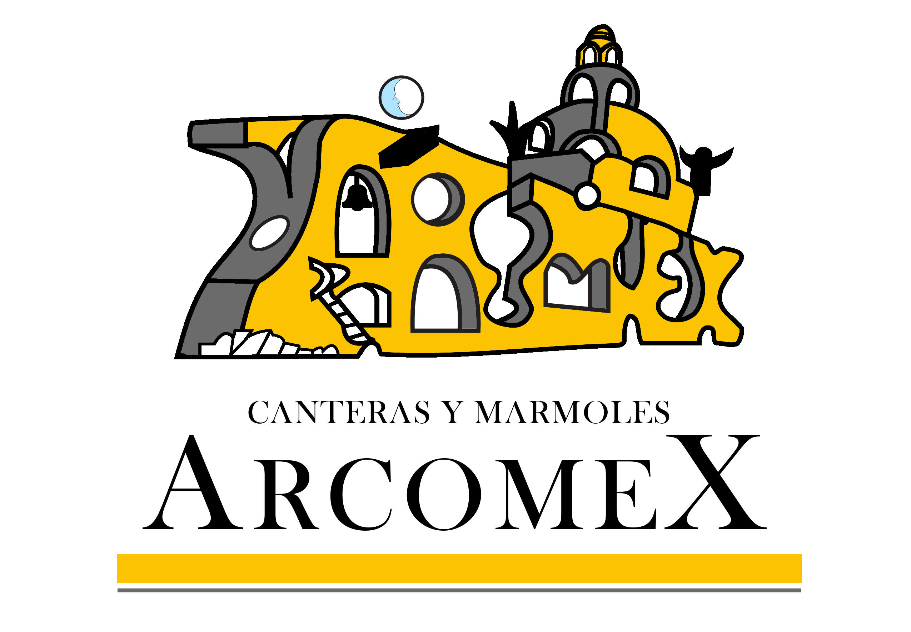
Aliado estratégico para prácticas profesionales
La Secretaría de Educación Pública (SEP) es la institución del gobierno mexicano encargada de administrar la educación preescolar, primaria, secundaria, media superior y superior en todo el país. Su propósito principal es garantizar un sistema educativo incluyente, equitativo y gratuito para todos los estudiantes
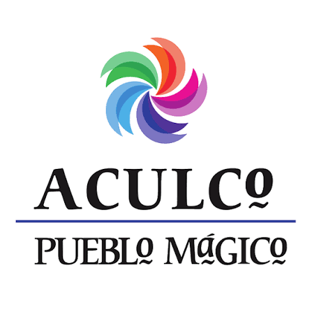
Gobierno Municipal
Revive los mejores momentos de nuestra comunidad estudiantil
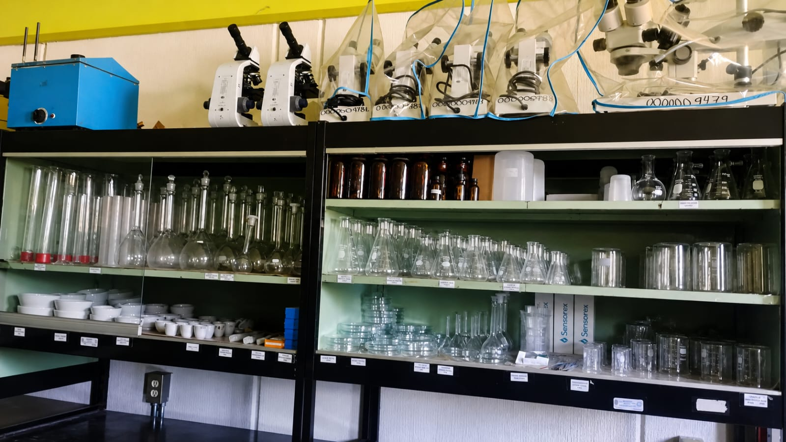
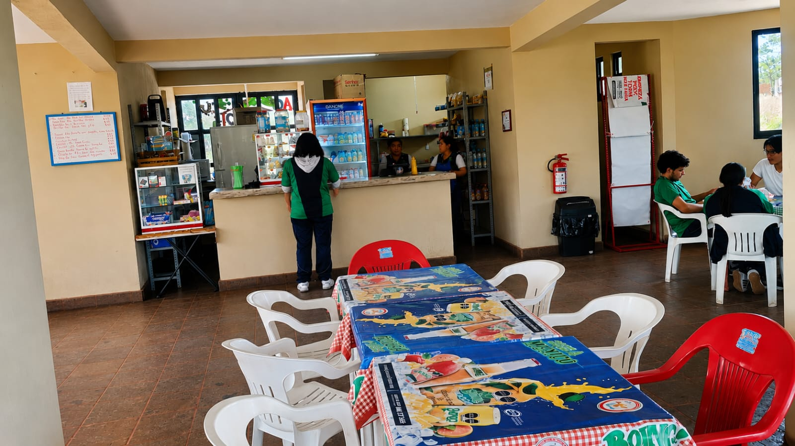
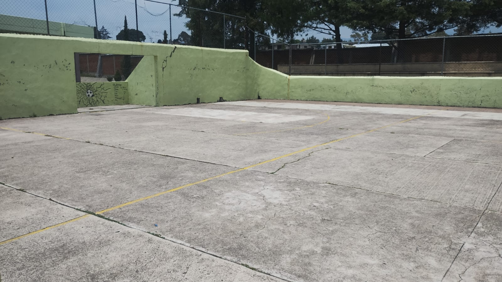
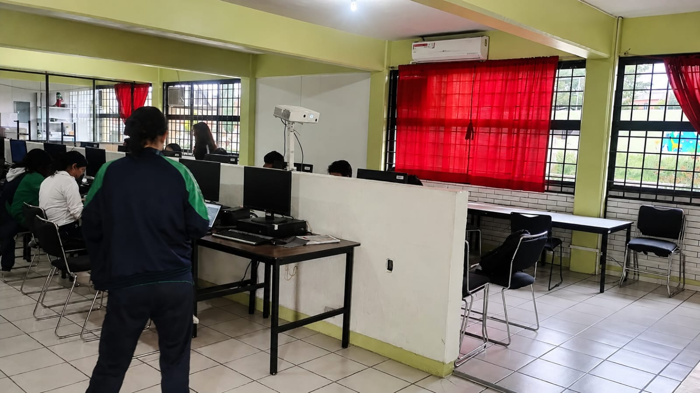
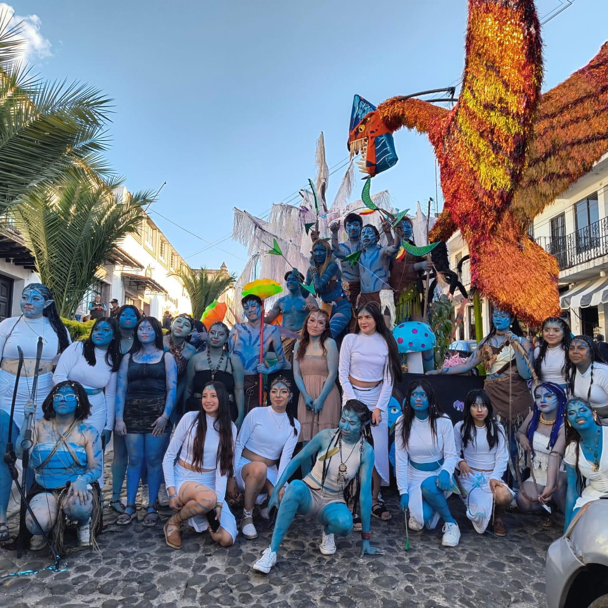
Conoce más sobre nuestra comunidad educativa
Video institucional del CECyTEM Plantel Aculco
Lo que dicen nuestros estudiantes, docentes y egresados

"Mi paso por la carrera de Programación en el CECyTEM Plantel Aculco me permitió descubrir el potencial de la tecnología para resolver problemas reales. Aprendí a desarrollar aplicaciones, crear sitios web, administrar bases de datos y comprender la lógica detrás de los sistemas informáticos. Además de los conocimientos técnicos, desarrollé habilidades como la disciplina, el trabajo colaborativo y la capacidad de aprender de manera constante. Hoy puedo decir que la formación que recibí me dio una base sólida para continuar mis estudios universitarios y prepararme para los desafíos del mundo laboral. Estoy orgulloso de haber formado parte de esta institución y de todo lo que aprendí durante mi formación."
"Como orientadora educativa del CECyTEM Plantel Aculco, mi mayor satisfacción es acompañar a las y los estudiantes en su desarrollo personal, académico y vocacional. Ver cómo fortalecen sus habilidades, descubren su potencial y alcanzan sus metas es una experiencia muy gratificante. Nuestro compromiso es brindarles el apoyo y la orientación necesarios para que tomen decisiones informadas y construyan un futuro exitoso."
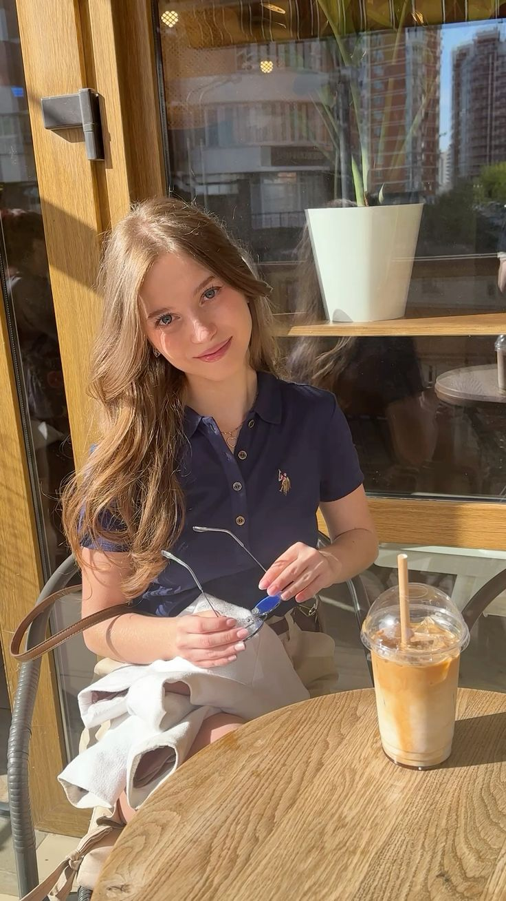
"Estudiar la carrera de Producción Industrial de Alimentos en el CECyTEM Plantel Aculco ha sido una experiencia muy enriquecedora. Durante mi formación adquirí conocimientos sobre el procesamiento, conservación e inocuidad de los alimentos, además de desarrollar habilidades prácticas en laboratorio y trabajo en equipo. Cada práctica fortaleció mi confianza y me preparó para continuar mis estudios y enfrentar nuevos retos en el sector alimentario."
Mantente informado sobre las actividades de nuestra comunidad

Nuestros estudiantes participan en eventos culturales en el Municipio de Aculco.
Celebramos la graduación de nuestros estudiantes que culminaran exitosamente su bachillerato tecnológico.
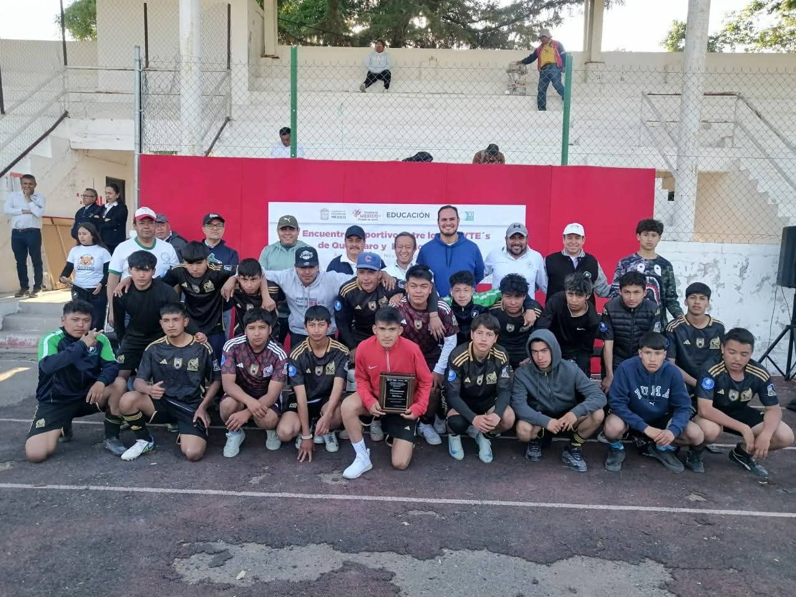
Nuestro equipo representativo obtuvo el segundo lugar en el torneo regional de fútbol.
CECyTEM Plantel Aculco y el H. Ayuntamiento de Aculco trabajando juntos...
El CECyTEM Plantel Aculco, en colaboración con el H. Ayuntamiento de Aculco, implementa un programa integral de reciclaje que busca fomentar la cultura ambiental entre nuestros estudiantes y la comunidad en general.
Juntos trabajamos por un municipio más limpio, educando a las nuevas generaciones sobre la importancia de separar, reutilizar y reciclar los residuos para preservar nuestro entorno natural.
Periódicos, revistas, cajas de cartón y hojas de papel. Se recolecta los días martes.
Botellas PET, envases de plástico y tapas. Se recolecta los días jueves.
latas y frascos de Aluminio. Se recolecta los días viernes.
Disminuye la cantidad de residuos en vertederos
Ahorra agua, energía y materias primas
Crea oportunidades en la industria del reciclaje
Fomenta valores ambientales en las nuevas generaciones

Nuestros estudiantes participan activamente en la separación y clasificación de materiales reciclables

Colaboración entre el CECyTEM y el municipio para hacer proyectos con elementos de reciclaje

Contenedores estratégicamente ubicados para facilitar el reciclaje en todo el plantel
Cada acción cuenta. Separa tus residuos, participa en las jornadas de reciclaje y ayuda a construir un Aculco más limpio y sostenible para las futuras generaciones.
Estamos para atenderte. Envíanos tus dudas o comentarios
Aculco de Espinoza, Estado de México, México
718 124 05 20
plantel.aculco@cecytem.mx
Lunes a Viernes: 8:00 - 16:00
Gracias por contactarnos. Hemos recibido tu mensaje y nuestro equipo lo está revisando. Estamos atentos a nuestra respuesta a la brevedad posible.
718 124 05 20
plantel.aculco@cecytem.mx